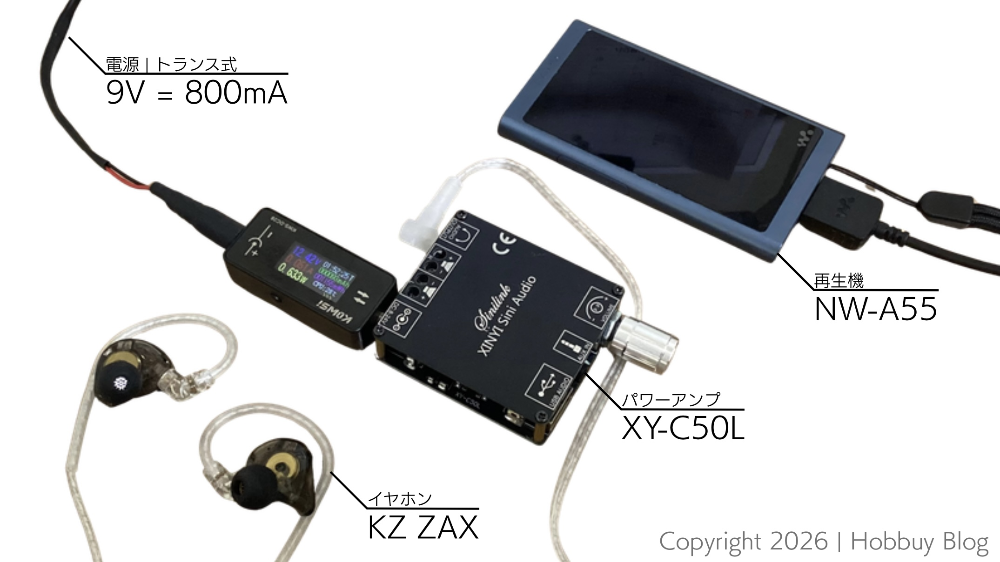

今回はKZ ZAXのレビューです．
ZAXと後継のZAS，ZARも考慮しましたが，Walkman(NW-A55)のレビューで書いた通りRADWIMPSの大ファンですのでその世界観が似合いそうなZAXを選びました．
まず言っておかなければいけないことがあります．
本レビューはNW-A55の音量を最大にした上で以下のEQ設定を適用し，RADWIMPSの曲を何周も再生して調教したのちの音についてのレビューです．
箱出し状態の音質のついての言及であればそう書きますし，逆に人によって音の好みは違えば調教のやり方も違うでしょうし，あくまで一個人の感想として参考にしてください．(参考になればですが)
周波数 - <---------------> +
６０ ----------~---------|
４００ ----------~-------|--
１ｋ ----------~---------|
２．５ｋ ----------~----|-----
６．３ｋ ----------|----------
１６ｋ ----------|----------
また，再生機はNW-A55です．
エージング時のみ，以下のセットアップで放置しています．
NW-A55からXY-C50LにBluetoothで接続し，そのXY-C50LにKZ ZAXを接続するという構造です．
このパワーアンプはアクティブスピーカーを繋げば「それっぽい」音は出ますし，音圧も出るのですが，トランス式電源を繋ぐべきかと言われると全力で否定する音質です，気休め程度であることをご理解ください．

箱出し状態では，私が好きなアーティストの曲のどれとも世界線が合わない音でした．
強いて言うならボカロ曲が合いそうかな，というくらいです．
ここを基準にします．
かなり好みに寄ってきました．
全帯域で振動板の動きの渋さが取れてきたのか，再生時の音圧も大幅に上がりました．
RADWIMPSの世界観とも合うようになってきましたが，BUMP OF CHICKENの方が合うかな…っていう感じです．
RADWIMPSファンとしてはなんともいえない虚無感を味わってしまいました．
まだまだフラットなので，「KZらしさ」を出すためには更なる調教が必要だと思います．
この段階でイヤーピースを変更しています．
そのためその変化にも触れます．
イヤーピース変更
最初に取り付けたSonyのマルチタイプ(EP-EX11M)から，JVCのSpiral Dot(EP-FX9M-B)に変更しています．
どちらも黒色のイヤーピースで，これは型番からも分かりますが，どちらもMサイズです．
Spiral Dotに変更したことでベースの低音が「ずぅぅぅぅぅん…」としっかり響いてくれるようになって，さらに高音の刺さりも幾分か取れたので，一旦これでいきます．
final TYPE Eイヤーピースも試す予定ですが，この24時間地点ではなくもっと後で行います．
ちなみに遮音性は下がり，イヤーピースそのものの安定感もSonyのものに少々劣るように感じます．
(軸径・引っ掛け部の幅を選ばない万能イヤーピースとしてSonyのマルチタイプを用意しているのは一通り間違いの音を出してくれるからです．)
経過時間による変化
ドライバの大多数を占める中音域BAがほぐれてきました．
片耳で低音DD×1，フルステージBA×4，ボーカルBA×2，トゥイータBA×1構成となっているのですが，そのうちフルステージBAとボーカルBAを合わせた計6つのBAが中音域を担当しています．
これらがほぐれてきたのでギターの情報量が増え，さらにボーカルが近くなっています．
ただし，高音の刺さりはあまりありません．
トゥイータBAに関しては刺さりやすいことで有名だそうですが，少なくとも私の感想としては「ドンシャリ」の「シャリ」が足りなくて普通に「低音が少し強めの綺麗に音が出るイヤモニ」感があります．
JVC HA-FX33Xとかいう低音バカイヤホン(褒め言葉)で感覚が狂ったのかもしれませんが．
※対照実験のため，ここの評価はSonyマルチタイプイヤーピースに基づいて書いていますが，以降はSpiral Dotを基準とします．